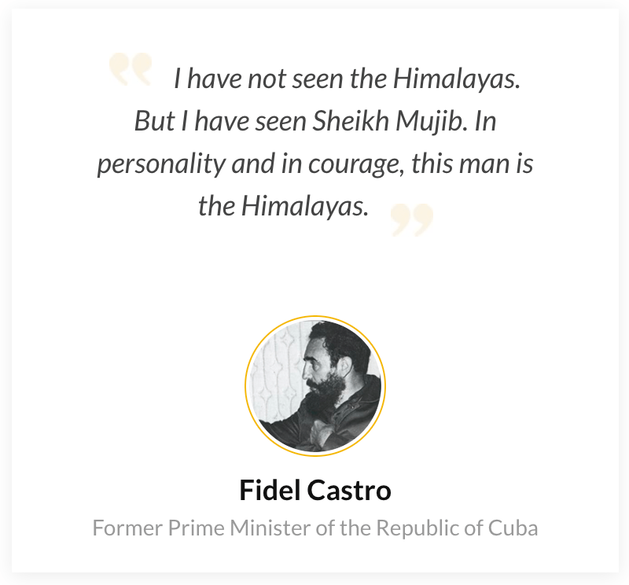
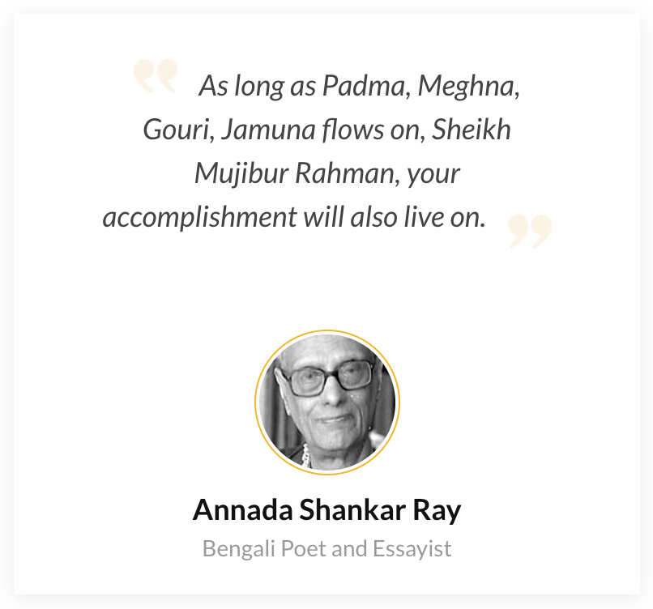
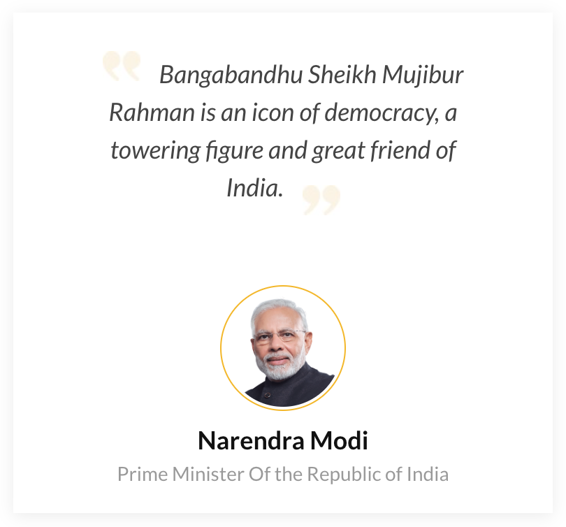
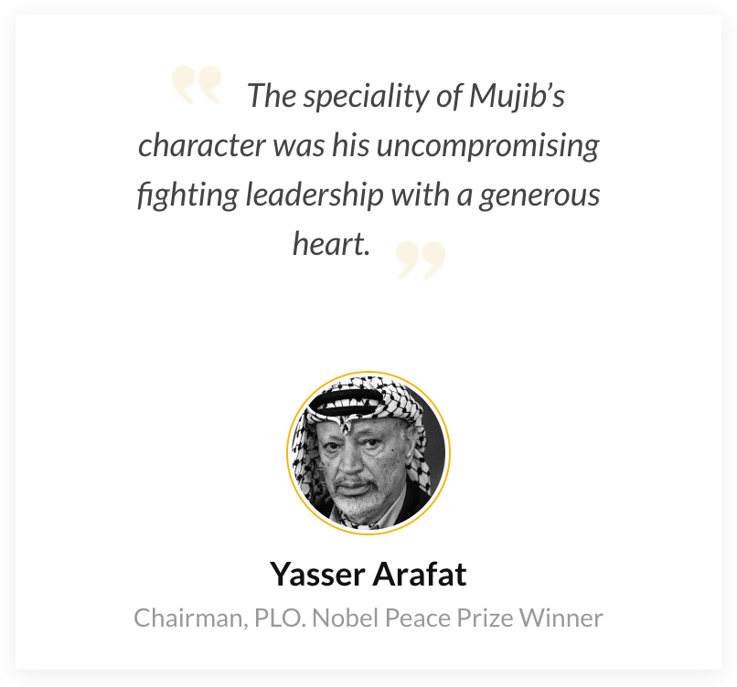

1920: Was born in Tungipara, a village in Gopalganj District in the province of Bengal in British India.
1929: Entered into class three at Gopalganj Public School, and two years later, class four at Madaripur Islamia High School.
1934: Became politically active when he joined the All India Muslim Students Federation
1940: Went on to become general secretary of the Islamia College Students Union. M. Bhaskaran Nair describes that Rahman "emerged as the most powerful man in the party" because of his proximity to Huseyn Shaheed Suhrawardy.
1943: Joined the Bengal Muslim League.
1946: Went on to become general secretary of the Islamia College Students Union. M. Bhaskaran Nair describes that Rahman "emerged as the most powerful man in the party" because of his proximity to Huseyn Shaheed Suhrawardy.
1947: After obtaining his degree, he was one of the Muslim politicians working under Suhrawardy during the communal violence that broke out in Calcutta.
1949: Was elected joint secretary of its East Bengal unit.
1953: Was made the party's general secretary.
1954: Elected to the East Bengal Legislative Assembly on a United Front coalition ticket
1955: Was elected to the second Constituent Assembly of Pakistan.
1956: Entered a second coalition government as minister of industries, commerce, labor, anti-corruption, and village aid.
1957: Resigned to work full-time for the party organization.
1958: Was arrested for organizing resistance and imprisoned till 1961.
1961: After his release from prison, Mujib started organizing an underground political body called the Swadhin Bangal Biplobi Parishad (Free Bangla Revolutionary Council), comprising student leaders, to oppose the regime of Ayub Khan. They worked for increased political power for Bengalis and the independence of East Pakistan.
1962: Was briefly arrested again in 1962 for organizing protests.
1963: Following Suhrawardy's death, Mujib came to a head the Awami League, which became one of the largest political parties in Pakistan.
1964: Working with other political parties, he supported opposition candidate Fatima Jinnah against Ayub Khan in the election.
1969: The government caved to the mounting pressure, dropped the charges on 22 February, and unconditionally released Mujib the following day.
1970: In the Pakistani general elections held on 7 December, the Awami League under Mujib's leadership won a massive majority in the provincial legislature and all but two of East Pakistan's quota of seats in the new National Assembly, thus forming a clear majority.
1971: It was on 7 March that Mujib called for independence and asked the people to launch an effective civil disobedience campaign and organized armed resistance at a mass gathering of people held at the Race Course Ground in Dhaka.
1972: Upon assuming the presidency after Yahya Khan's resignation, Zulfikar Ali Bhutto responded to international pressure and released Mujib on 8 January.
1973: A constitution was proclaimed, and elections were held, which resulted in Mujib and his party gaining power with an absolute majority.
1974: Sought Bangladesh's membership in the Organisation of the Islamic Conference and the Islamic Development Bank and made a significant trip to Lahore in 1974 to attend the OIC summit, which helped repair relations with Pakistan to an extent.
1975: On 15 August, a group of junior army officers invaded the presidential residence with tanks and killed Mujib, his family, and his staff. Only his daughters, Sheikh Hasina Wajed (Current Prime Minister of Bangladesh) and Sheikh Rehana, who were visiting West Germany, escaped. They were banned from returning to Bangladesh.




Click Here to Read the full Biography and History about The Father of Bengali Nation.